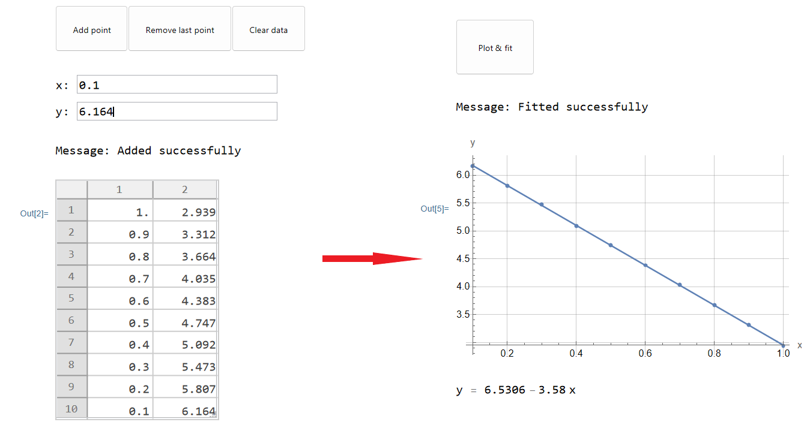
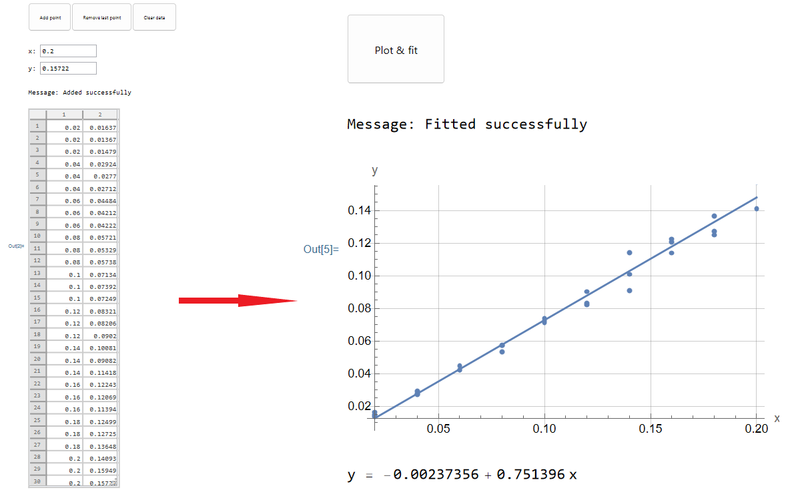
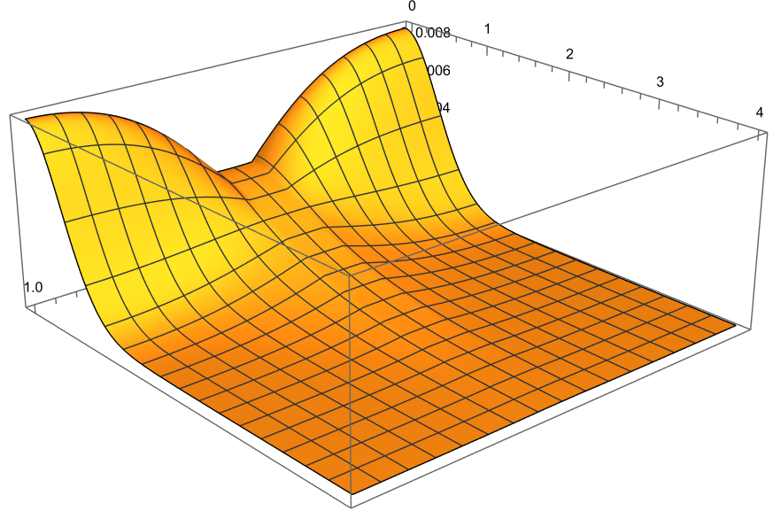
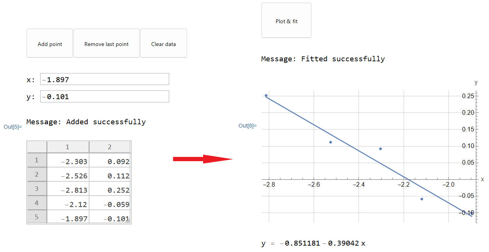
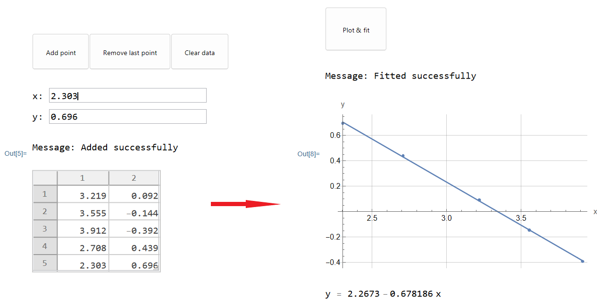
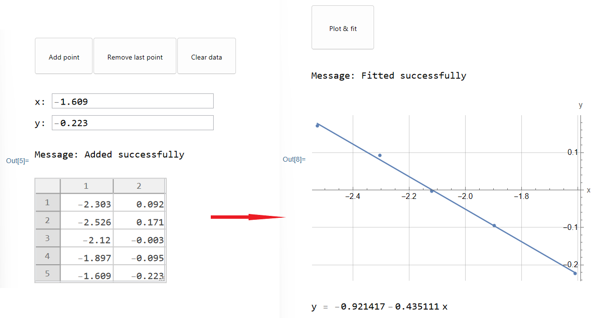
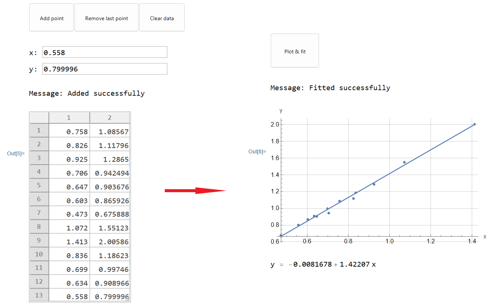

A1. 열역학으로부터 $v = \sqrt{3kT/m}$임을 안다. 여기서 $m$은 입자의 질량, $k$는 볼츠만 상수이다. 격자간 자리 사이의 특성 도약 시간은 (전이 확률)×(입자 속력)에 반비례하고, 확산 계수는 도약 시간에 반비례하므로
A2. 먼저 한 축(이를 $x$축이라 하자)을 따른 입자의 제곱평균제곱근 변위를 구하자. 이 축을 따른 운동은 준비 강의에서 다룬 운동과 같으므로, 평균 제곱 변위는
$$\overline{x^2} = na^2,$$여기서 $n$은 전체 도약 횟수이다. 도약 횟수는 $n = t/\tau$로 어림할 수 있다. $D = a^2/2\tau$를 쓰면
$$\overline{x^2} = 2Dt.$$끝으로, 서로 다른 축을 따른 운동은 독립이라고 볼 수 있으므로 $\overline{{y^2}} = \overline{{z^2}} = 2Dt$이다. 피타고라스 정리에 의해
A3. 앞 문항의 결과로 확산 계수를 구하자. $\Delta r_{{sq}}^2 = 6Dt$이므로 $D = \Delta r_{{sq}}^2/6t$이다. 이를 A1과 결합하면 $\Delta r_{{sq}}^2/(6t\sqrt{{T}}) \propto \exp(-E_g/kT)$이다. 이제 가장 쉬운 방법은 $X = 1/T$에 대한 $Y = \ln\left(\Delta r_{{sq}}^2t^{{-1}}T^{{-1/2}}\right)$의 기울기를 구하는 것이다.
정확도를 보장하는 방법. 첫째, $\Delta r_{{sq}} \gg 1$인 것이 좋다. 둘째, $1/T$는 $0.9$만큼 변하고 $E_g$는 기울기에 비례한다. $2\,\%$ 정확도를 보장하려면 최저·최고 온도에서의 오차가 $\sigma_Y(0.1) + \sigma_Y(1.0) \le 0.02\cdot 0.9E_g$를 만족해야 한다. $Y = \ln[\Delta r_{{sq}}^2T^{{-1/2}}]$(상수 차이 제외)이므로 이는 $2\varepsilon_r(0.1) + 2\varepsilon_r(1.0) \le 0.018E_g$, 즉 모든 점에서 $\varepsilon_r = \sigma_r/\Delta r_{{sq}} \le 0.0045E_g$이면 충분하다. 측정한 점들은 다음과 같다.
| $t$ | 10 | 10 | 10 | 10 | 10 | 10 | 10 | 10 | 10 | 10 |
|---|---|---|---|---|---|---|---|---|---|---|
| $T$ | 1.000 | 1.111 | 1.250 | 1.429 | 1.667 | 2.000 | 2.500 | 3.333 | 5.000 | 10.00 |
| $N$ | 10000 | 10000 | 10000 | 10000 | 10000 | 10000 | 10000 | 10000 | 10000 | 10000 |
| $\Delta r_{sq}$ | 13.750 | 17.009 | 20.882 | 25.999 | 32.154 | 40.362 | 50.733 | 65.932 | 86.227 | 122.632 |
| $\sigma_r$ | 0.053 | 0.066 | 0.081 | 0.102 | 0.127 | 0.156 | 0.198 | 0.257 | 0.336 | 0.477 |
| $X$ | 1.000 | 0.900 | 0.800 | 0.700 | 0.6 | 0.5 | 0.4 | 0.3 | 0.2 | 0.1 |
| $Y$ | 2.939 | 3.312 | 3.664 | 4.035 | 4.383 | 4.747 | 5.092 | 5.473 | 5.807 | 6.164 |
요구된 정확도가 실제로 달성됨을 알 수 있다. InteractiveBuffer.nb로 $Y(X)$를 그리고 기울기를 구하면

InteractiveBuffer.nb에서 $Y(X)$의 직선 맞춤.편집자 주: 문제지 원문에서는 이 문항도 A2로 번호가 매겨져 있다. 답안지와 이 풀이에서는 A3로 부른다.
B1. 문제지로부터, 확산 흐름에 수직인 낟알 경계는 유효 확산 계수에 영향을 주지 않는다고 결론지을 수 있다. 세 방향의 경계(전체 상대 부피 $\delta$) 중 확산 방향에 나란한 두 방향이 $2\delta/3$를 차지하므로
B2. $D_{{gb}}/D$가 크고 $\delta$가 작을수록 시뮬레이션 결과가 좋다. 또한 A형 확산은 큰 시간 규모에서 나타나므로 최대 시뮬레이션 시간을 쓰는 것이 좋다. 따라서 $(t, D_{{gb}}/D, \delta) = (5, 5, 0.005)$를 출발점으로 삼자. B.nb의 그래프는 이상적으로 기울기 $k = -1/(4D_{{eff}}t)$를 가지므로, 프로그램의 단위로
좌표를 $X = \delta(D_{{gb}}/D - 1)$, $Y = \dfrac{{1}}{{4|k|t}} - 1$로 잡으면 이 의존성은 선형이 된다. $X$를 크게 바꾸는 가장 좋은 방법은 $\delta$를 키우는 것이다. B.nb의 Width 슬라이더를 낮추면 가장자리 효과를 줄이는 데에도 도움이 된다. 측정한 점들($t = 5$, $D_{{gb}}/D = 5$):
| $\delta$ | $X$ | $|k|$ (세 번 실행) | $Y$ | ||||
|---|---|---|---|---|---|---|---|
| 0.005 | 0.02 | 0.049194 | 0.049325 | 0.049271 | 0.01637 | 0.01367 | 0.01479 |
| 0.010 | 0.04 | 0.048579 | 0.048652 | 0.048679 | 0.02924 | 0.02770 | 0.02712 |
| 0.015 | 0.06 | 0.047854 | 0.047978 | 0.047974 | 0.04484 | 0.04212 | 0.04222 |
| 0.020 | 0.08 | 0.047294 | 0.047470 | 0.047286 | 0.05721 | 0.05329 | 0.05738 |
| 0.025 | 0.10 | 0.046670 | 0.046558 | 0.046616 | 0.07134 | 0.07392 | 0.07259 |
| 0.030 | 0.12 | 0.046159 | 0.046208 | 0.045863 | 0.08321 | 0.08206 | 0.09020 |
| 0.035 | 0.14 | 0.045421 | 0.045837 | 0.044876 | 0.10081 | 0.09082 | 0.11418 |
| 0.040 | 0.16 | 0.044546 | 0.044615 | 0.044885 | 0.12243 | 0.12069 | 0.11394 |
| 0.045 | 0.18 | 0.044445 | 0.044355 | 0.043995 | 0.12499 | 0.12725 | 0.13648 |
| 0.050 | 0.20 | 0.043823 | 0.043122 | 0.043207 | 0.14093 | 0.15949 | 0.15722 |

InteractiveBuffer.nb에서 $Y(X)$의 직선 맞춤.이는 오차 범위 안에서 B1의 이론적 추정과 일치한다.
C1. 여기서 사전에 알 수 있는 유일한 제약은 차원이다. 우변에서 $a$를 제외한 모든 인자는 무차원이므로
C2. 문제지에서 말했듯이 B형 확산의 규모는 $a$보다 훨씬 작고(즉 $\sqrt{{2[D_{{gb}}/D]t}} \ll 1$) 동시에 $\delta a$보다 훨씬 커야 한다(즉 $\sqrt{{2t}} \gg \delta$). 예를 들어 입력 매개변수를 $(t, D_{{gb}}/D, \delta) = (0.100, 25, 0.10)$으로 잡으면, 어느 매개변수든 넓은 범위에서 바꾸어도 B형 확산을 얻을 수 있다. 시뮬레이션한 확산이 B형인지는 농도 분포를 그려 문제지의 것과 비교하면 언제든 확인할 수 있다. 예를 들어 $(0.100, 25, 0.10)$에서의 농도 지도는 다음과 같다.

기울기 $k = d\ln\bar c/dz^{{6/5}}$를 구하기 위해 C.nb가 만든 그래프에서 선형 구간을 잘라 낸다. $\xi$는 $\delta$를 바꾸어 확산을 시뮬레이션하고 InteractiveBuffer.nb에서 $\ln|k|(\ln\delta)$를 그려 구한다. $\eta$와 $\zeta$도 같은 방법으로 각각 $D_{{gb}}/D$와 $t$를 바꾸어 구한다. 측정한 점들($Z \equiv \delta^{{-0.39}}[D_{{gb}}/D]^{{-0.68}}t^{{-0.44}}$, C3에서 사용):
| $\delta$ | 0.100 | 0.080 | 0.060 | 0.120 | 0.150 |
|---|---|---|---|---|---|
| $k$ | −1.08567 | -1.11796 | -1.2865 | -0.942494 | -0.903676 |
| $\ln\delta$ | -2.303 | -2.526 | -2.813 | -2.120 | -1.897 |
| $\ln|k|$ | 0.092 | 0.112 | 0.252 | -0.059 | -0.101 |
| $Z$ | 0.758 | 0.826 | 0.925 | 0.706 | 0.647 |
| $D_{gb}/D$ | 25 | 35 | 50 | 15 | 10 |
|---|---|---|---|---|---|
| $k$ | −1.08567 | -0.865926 | -0.675888 | -1.55123 | -2.00586 |
| $\ln[D_{gb}/D]$ | 3.219 | 3.555 | 3.912 | 2.708 | 2.303 |
| $\ln|k|$ | 0.092 | -0.144 | -0.392 | 0.439 | 0.696 |
| $Z$ | 0.758 | 0.603 | 0.473 | 1.072 | 1.413 |
| $t$ | 0.100 | 0.080 | 0.120 | 0.150 | 0.200 |
|---|---|---|---|---|---|
| $k$ | −1.08567 | -1.18623 | -0.99746 | -0.908966 | -0.799996 |
| $\ln t$ | -2.303 | -2.526 | -2.120 | -1.897 | -1.609 |
| $\ln|k|$ | 0.092 | 0.171 | -0.003 | -0.095 | -0.223 |
| $Z$ | 0.758 | 0.836 | 0.699 | 0.634 | 0.558 |



구하는 계수는 이 직선들의 기울기이다.
C3. $\psi$, $\xi$, $\eta$, $\zeta$를 알면, $X = Z = \delta^{{-0.39}}[D_{{gb}}/D]^{{-0.68}}t^{{-0.44}}$에 대한 $Y = |k|$의 기울기로 $C$를 구할 수 있다. 앞 문항의 점들에 대해 $X$를 계산하여 InteractiveBuffer.nb로 그리면
